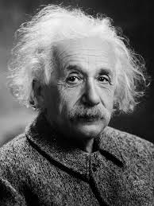

Albert EinsteinTheoretical Physicist & Nobel Laureatet |
| Home | Biography | Gallery | Famous Quotes | Contact |
Welcome To Official Albert Einstein websiteExplore the life and work of one of history's greatest Scientific minds. |
|||||||||||
About EinsteinAlbert Einstein (14 March 1879 – 18 April 1955) was a German-born theoretical physicist who developed the theory of relativity, one of the two pillars of modern physics. His work is also known for its influence on the philosophy of science. Einstein is best known to the general public for his mass–energy equivalence formula E = mc². He received the 1921 Nobel Prize in Physics "for his services to theoretical physics, and especially for his discovery of the law of the photoelectric effect", a pivotal step in the development of quantum theory.
"Imagination is more important than knowledge. Knowledge is limited. Imagination encircles the world."
Near the beginning of his career, Einstein thought that Newtonian mechanics was no longer enough to reconcile the laws of classical mechanics with the laws of the electromagnetic field. This led him to develop his special theory of relativity during his time at the Swiss Patent Office in Bern (1902–1909). |

Albert Einstein in 1921 Quick Facts
|
||||||||||
Einstein's Birthplace |
|
© 2025 Albert Einstein Official Website.All rights reserved |